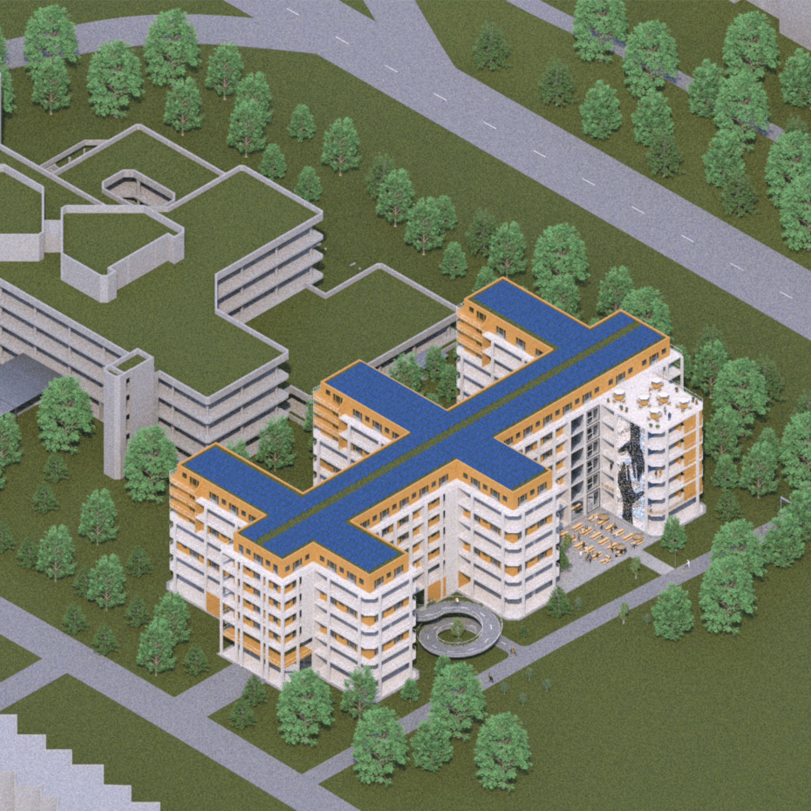
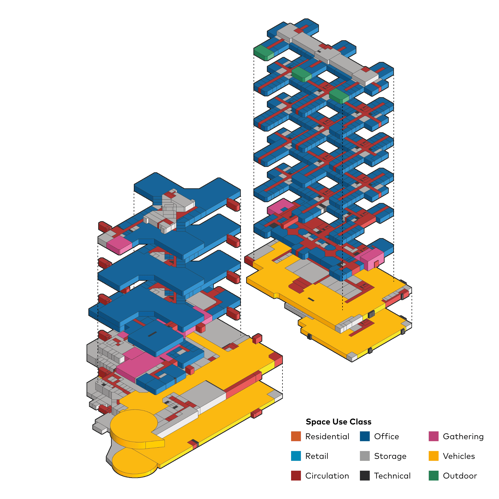
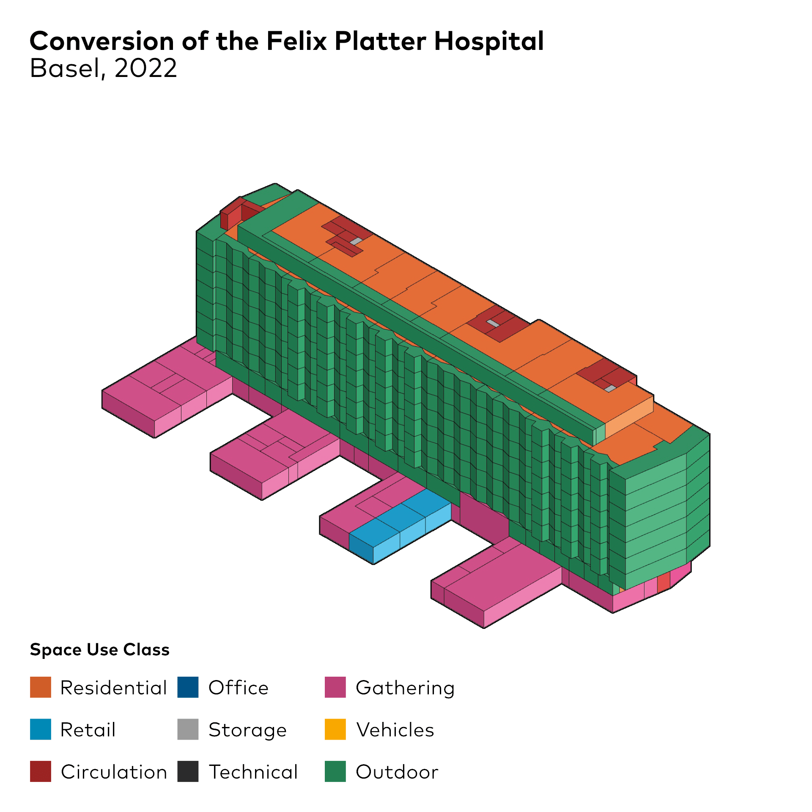

Nachhaltiges Bauen M.Sc.
2025
Community and developer approaches to residential adaptive reuse: A semi-quantitative study on integration
⬤ Diese Masterarbeit untersucht, wie Großprojekte lokale Gemeinschaftsansätze in die Umnutzung von
Wohngebäuden integrieren können. Grundlage ist die vergleichende Analyse von 20 europäischen
Adaptive-Reuse-Projekten sowie ein Expert:innen-Workshop zur Konversion zweier Bürogebäude aus
den 1970er und 1990er Jahren in München-Neuperlach.
Community-Projekte werden von Genossenschaften oder Nonprofit-Organisationen getragen und
priorisieren bezahlbares Wohnen, Gemeinschaftsflächen und partizipative Entscheidungsfindung.
Developer-Projekte werden von privaten Investoren oder städtischen Eigentümern geleitet und
fokussieren höherwertige Wohnungen sowie rentable Büro- und Einzelhandelsflächen. Die Analyse
offenbart deutliche Unterschiede: Community-Projekte integrieren stärker zirkuläre
Nutzungsmodelle, Developer-Projekte erzielen schnellere wirtschaftliche Skalierbarkeit.
Die Forschung schlägt ein hybrides Governance-Modell vor – eine Public-Private-People
Partnership, in der Entwickler von öffentlicher Förderung profitieren und durch Querfinanzierung
gemeinwohlorientierte Ziele unterstützen. Szenarien zeigen finanzielle Rentabilität innerhalb
von 10–15 Jahren bei ausgewogener Nutzungsmischung. Eine gebäudeflügelweise Integration
ermöglicht operative Unabhängigkeit bei geteilter strategischer Verantwortung.
⬤ This master's thesis examines how large-scale projects can integrate local community
approaches into the conversion of residential buildings. It is based on a comparative analysis
of 20 European adaptive reuse projects and an expert workshop on the conversion of two office
buildings from the 1970s and 1990s in Munich-Neuperlach.
Community projects are supported by
cooperatives or non-profit organizations and prioritize affordable housing, communal spaces, and
participatory decision-making. Developer projects are led by private investors or municipal
owners and focus on higher-value apartments and profitable office and retail space. The analysis
reveals clear differences: community projects integrate circular usage models to a greater
extent, while developer projects achieve faster economic scalability.
The research proposes a
hybrid governance model—a public-private-people partnership in which developers benefit from
public funding and support public welfare goals through cross-financing. Scenarios show
financial profitability within 10–15 years with a balanced mix of uses. Integration on a
building wing basis enables operational independence with shared strategic responsibility.
Dipl.-Ing. J. Staudt
Dipl.-Ing. C. Schade